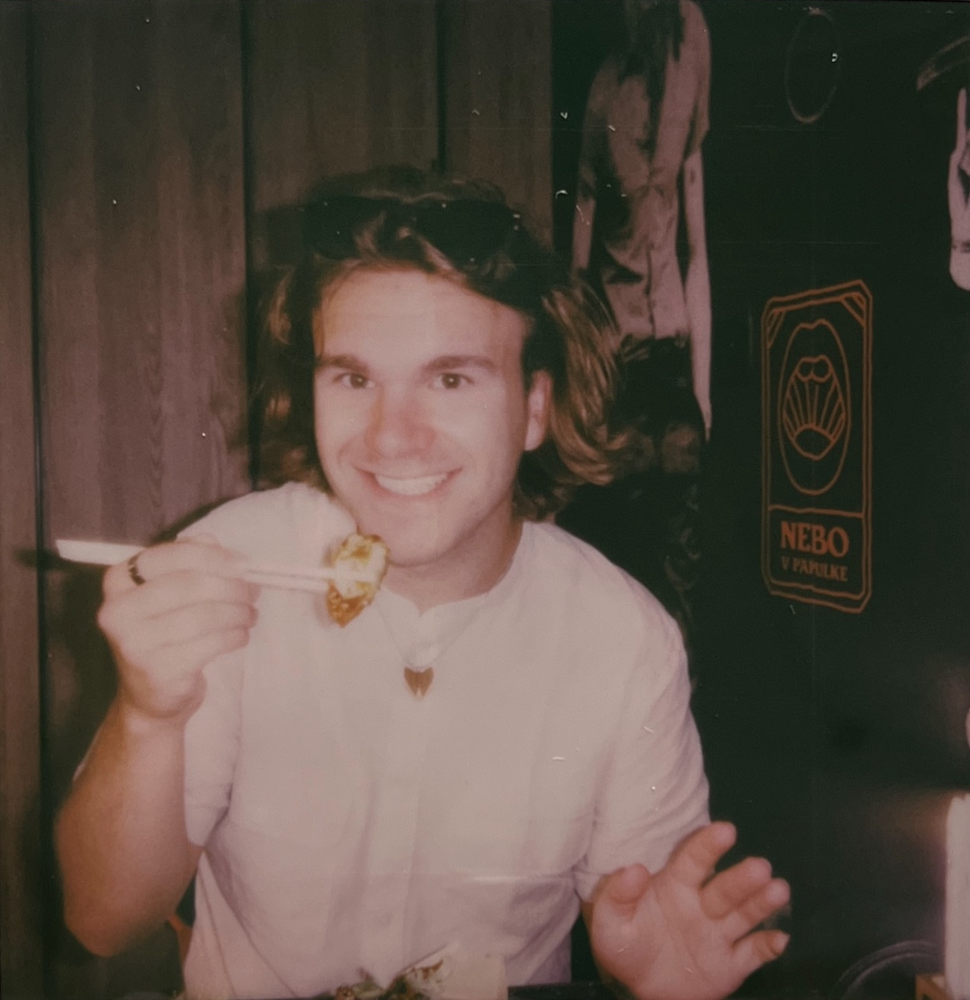

Ve své tvorbě se zaměřuje na sociální témata a volně se pohybuje v oblasti digitálního
umění. Zkoumá nové technologie a média, jako jsou 3D tisk, umělá inteligence (AI art)
nebo blockchain. Jeho práce často pracuje s narativem a skrytými významy. Společným
jmenovatelem posledních projektů je hledání rovnováhy mezi uměním a designem. Věnuje se
mimo jiné NFT a umění vytvářenému pomocí AI. Jako protiváhu k digitálním technologiím
rozvíjí také sportovní praxi v rámci své umělecké činnosti.
Kromě umělecké tvorby se věnuje organizováním vzdělávacích výletu pro mládež, jelikož
již několik let jezdí jako vedoucí na letní dětský tábor. Jeho práce spočívá v pomáhání
při organizaci a plánování výletů, fotografování a tvorbě propagačních materiálů.
V osobním životě se snaží si udržovat rituály, díky kterým se snaží žít poměrně
produktivní život. V poslední době patří mezi jeho rituály především pravidelná pohybová
aktivita, například běh, plavání, jóga, domácí cvičení. Stále se snaží učit se novým
věcem, momentálně se učí hrát na harmoniku. Navíc se věnuje i četbě odborně naučné
literatury, ale nevyhýbá se také novelám a románům.
2026 Instruktor powerjógy
2024 SAUCONY Vokolo priglu - 12. 10. 2024 / Brno /
14km / 1:28:24
2025 Charitativní Běh pro Julii - 13. 5. 2025 / Brno
/ 9km
2025 Olympíjský běh - 18. 6. 2025 / Brno / 10km /
0:56:42
2025 Triexpert
Cup - 13. 8. 2025 / Brno / 11,1km / 1:04:50
2025 SAFE RUN - 25 9. 2025 / Brno / 2km /
0:10:25
2025 SAUCONY Vokolo priglu - 11. 10. 2025 / Brno /
14km / 1:22:16
2026 Olympíjský běh - 17. 6. 2026 / Brno / 10km /
0:56:38
2026 SAUCONY Vokolo priglu - 10. 10. 2026 / Brno /
14km /
Honza Mikulica studied multimedia at the Secondary School of Applied Arts ( SŠUM) from 2017 to 2021,
specializing in the photography studio under the guidance of PhDr. BcA. Darina Hlinková,
Ph.D. During this period, he also encountered subjects related to graphics, animation,
drawing, and painting. His focus during his studies primarily involved staged
photography, through which he depicted a world of fantasy.
Since 2021, Mikulica has been studying at the Faculty of Fine Arts (FaVU) in the field of Intermedia in the
Studio of Body design under the
guidance of Prof. Mgr. A. Lenka Klodová, Ph.D., and MgA. Karolina Raimund. In this
studio, his focus has primarily revolved around social issues.
In 2023, he completed an internship at the Studio of a Visiting Pedagogue under the
guidance of Norwegian educator Alma Leora Culén, exploring research through design and
Yo-Yo Machines. Later in the same year, he underwent a second internship, this time
under the guidance of the MSHR group (Brenna Murphy and Birch Cooper).
2026 Power Yoga Instructor
2024 SAUCONY Vokolo priglu - 12. 10. 2024 / Brno /
14km / 1:28:24
2025 Charitativní Běh pro Julii - 13. 5. 2025 / Brno
/ 9km
2025 Olympíjský běh - 18. 6. 2025 / Brno / 10km /
0:56:42
2025 Triexpert
Cup - 13. 8. 2025 / Brno / 11,1km / 1:04:50
2025 SAFE RUN - 25 9. 2025 / Brno / 2km /
0:10:25
2025 SAUCONY Vokolo priglu - 11. 10. 2025 / Brno /
14km / 11:22:16
2026 Olympíjský běh - 18. 6. 2025 / Brno / 10km /
0:56:38
2026 SAUCONY Vokolo priglu - 11. 10. 2025 / Brno /
14km /
{kind=link}